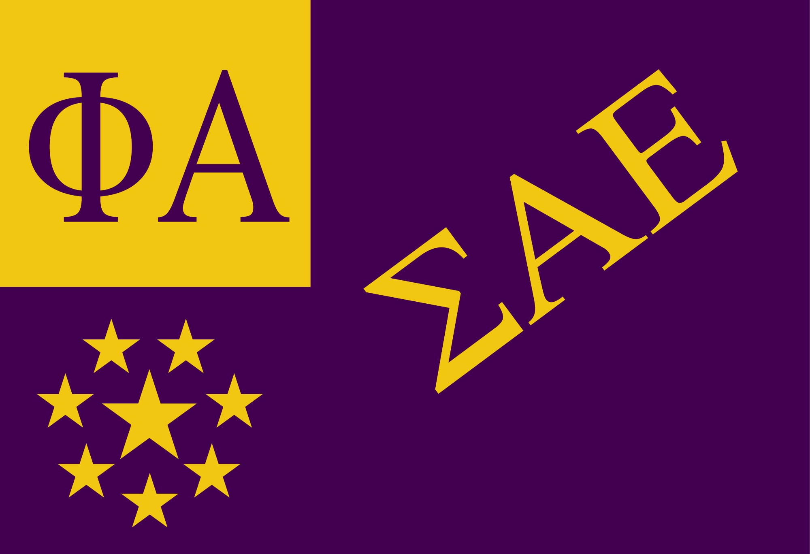
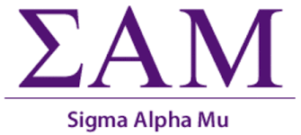

SAE
SAMMY
PiKapp
Lambda Chi
GREEK LIFE

Sigma Alpha Epsilon is a fraternity at the University of Miami that is known for having great kids and the highest GPA out of all other fraternities on campus. They work with Paddy Murphy every year to raise money for Children's miracle network to find cures for certain diseases. SAE is a top fraternity nation-wide and brings in some of the best kids.

Sigma Alpha Mu is another good fraternity on campus here in Miami. It has a good relationship with other fraternities and sororities on campus.

PiKapp is also another great fraternity on campus. Their philanthropy is The Ability Experience. It is a nonprofit organization that serves people with disabilities. The Ability Experience was founded in 1977 as the national philanthropy of Pi Kappa Phi Fraternity with the purpose of instilling lifelong service in its members and enhancing the quality of life for people with disabilities. Pi Kappa Phi at The University of Miami is still considered a relatively young Fraternity that has accomplished a lot so far.

Lambda Chi Alpha at the Uniersity of Miami is located across the street from the Intramurual Fields. Lambda Chi has everything a fraternity should have- philanthropy, events, special causes and more. They work well with other fraterniteis and sororities on campus to ensure the best experience for everyone involved.